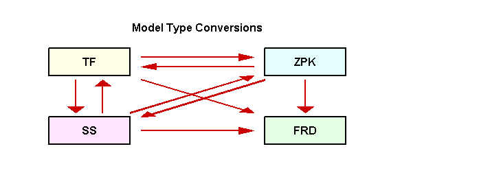
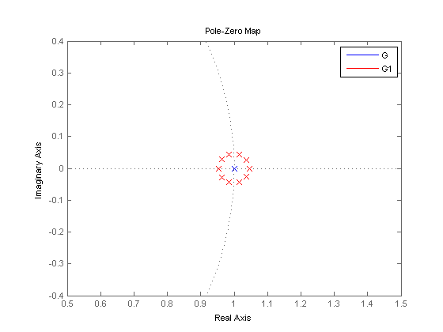
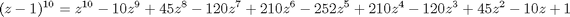
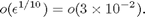
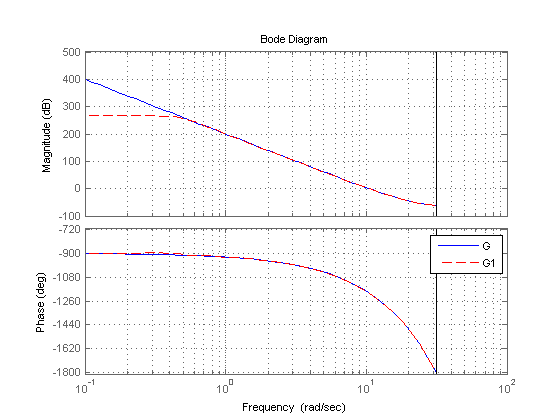

Switching Model Representation
This demo shows how to switch between the transfer function (TF), zero-pole-gain (ZPK), state-space (SS), and frequency response data (FRD) representations of LTI systems.
Contents
Model Type Conversions
You can convert models from one representation to another using the same commands that you use for constructing LTI models (tf, zpk, ss, and frd). For example, you can convert the state-space model:
sys = ss(-2,1,1,3);
to a zero-pole-gain model by typing:
zpksys = zpk(sys)
Zero/pole/gain: 3 (s+2.333) ----------- (s+2)
Similarly, you can calculate the transfer function of sys by typing:
tf(sys)
Transfer function: 3 s + 7 ------- s + 2
Conversions to FRD require a frequency vector:
f = logspace(-2,2,10); frdsys = frd(sys,f)
Frequency(rad/s) Response
---------------- --------
0.0100 3.5000 - 0.0025i
0.0278 3.4999 - 0.0070i
0.0774 3.4993 - 0.0193i
0.2154 3.4943 - 0.0532i
0.5995 3.4588 - 0.1375i
1.6681 3.2949 - 0.2459i
4.6416 3.0783 - 0.1817i
12.9155 3.0117 - 0.0756i
35.9381 3.0015 - 0.0277i
100.0000 3.0002 - 0.0100i
Continuous-time frequency response.
Note that FRD models cannot be converted back to the TF, ZPK, or SS representations (such conversion requires the frequency-domain identification tools available in System Identification).
All model type conversion paths are summarized in the diagram below.

Implicit Type Casting
Some commands expect a specific type of LTI model. For convenience, such commands automatically convert incoming LTI models to the appropriate representation. For example, in the sample code:
sys = ss(0,1,1,0);
[num,den] = tfdata(sys,'v')
num =
0 1
den =
1 0
the function tfdata automatically converts the state-space model sys to an equivalent transfer function to obtain its numerator and denominator data.
Caution About Switching Back and Forth Between Representations
Conversions between the TF, ZPK, and SS representations involve numerical computations and can incur loss of accuracy when overused. Because the SS and FRD representations are best suited for numerical computations, it is good practice to convert all models to SS or FRD and only use the TF and ZPK representations for construction or display purposes.
For example, convert the ZPK model
G = zpk([],ones(10,1),1,0.1)
Zero/pole/gain: 1 -------- (z-1)^10 Sampling time: 0.1
to TF and then back to ZPK:
G1 = zpk(tf(G));
Now compare the pole locations for G and G1:
G1 = zpk(tf(G)); pzmap(G,'b',G1,'r') axis([0.5 1.5 -0.4 0.4]) legend('G','G1')
Observe how the pole of multiplicity 10 at z=1 in G is replaced by a cluster of poles in G1. This occurs because the poles of G1 are computed as the roots of the polynomial

and an o(eps) error on the last coefficient of this polynomial is enough to move the roots by

In other words, the transfer function representation is not accurate enough to capture the system behavior near z=1, which is also visible in the Bode plot of G vs. G1:
bode(G,'b',G1,'r--'), grid legend('G','G1')
This illustrates why you should avoid unnecessary model conversions.